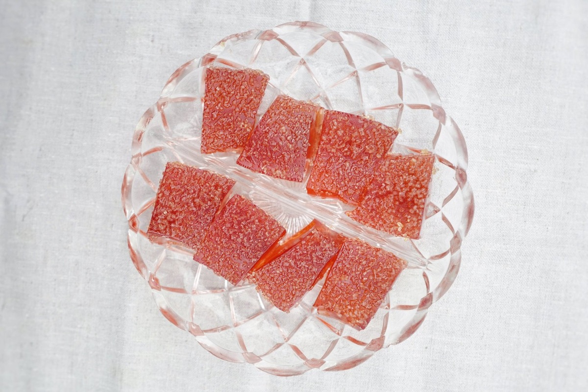

Negroni Jello

I remember eating grapes and bananas suspended in Jello when I was little, but until this past October, it had been decades since I last ate - let alone made Jello.
I recently found my Grandmother Schwab’s 1960s Jello cookbook and have been experimenting with various layered, large-format molds. (A peaches and cream recipe is my current favorite, but I really want to attempt this complicated rainbow cake one day.) I decided to try something different for Thanksgiving and made these incredibly simple Negroni bites topped with sanding sugar. Yes, basically a fancy jello shot ;)
Negroni Jello
Ingredients
1 C Beefeater Dry Gin
1 C Campari
1 C Carpano Antica Sweet Vermouth
1 C Blood Orange Soda (or any citrus soda)
4 (1/4 ounce) packets of unflavored gelatin
Sanding sugar for serving
Method
Spray an 8 x 8 square cake pan (or anything similar) with cooking spray and set aside. (Nonstick bakeware is also handy here.)
Combine vermouth and soda in a small pot and sprinkle the gelatin over the top. Stir and allow to sit for a few minutes. Bring to a low simmer, stirring frequently until the gelatin is dissolved. Do not boil. Meanwhile, combine gin and Campari in a large bowl.
Pour the hot mixture into the cold mixture and stir well.
Pour the Jello mixture into the prepared pan and carefully transfer to the fridge. Allow to set for at least 4 hours. (I always aim for overnight.)
To unmold, separate the Jello from the sides of the pan by gently pressing down on the Jello edge. Next, dip the base of the pan in a bowl of warm water for 10 - 15 seconds (more could melt the Jello). Invert onto a serving tray. (Dip again if the Jello doesn’t unmold.)
To serve, cut into bite-sized pieces and dust the tops in coarse sugar.
Cheers!